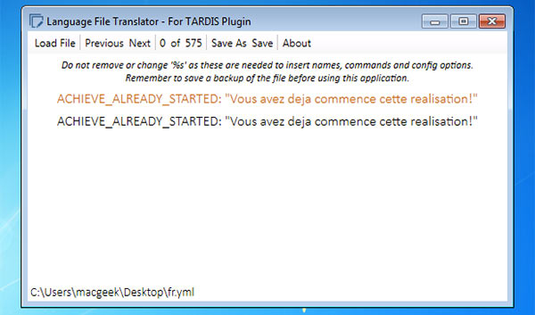

A Bukkit plugin for all Doctor Who fans — create and use a TARDIS! It’s bigger on the inside!
From version 2.9-beta-2, all in-game messages can now be localised to the server’s preferred language
The default language is English, and all the messages are contained in the plugins/TARDIS/language/en.yml file.
Localising TARDIS is a two step process:
Language translations require their own file. Make a copy of en.yml and translate it. For example; if the language is set to Spanish (code: es), then a file called es.yml needs to placed in the plugins/TARDIS/language/ folder.
Vistaero (a helpful TARDIS plugin user) has written a useful tool for editing language files, you can get it here: TARDIS Language File Translator.

The config option to change is: preferences.language: [language code] — you can set the language with the command: /tardisadmin language [code] — use tab completion to see a list of valid language codes.
As messages are added for new TARDIS features, the preferred language file will be updated (in English) for you to translate.